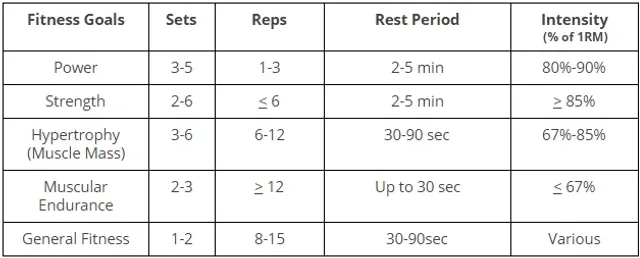

Charts
This chart outlines the optimal sets, reps, rest periods, and intensity for various fitness goals. The first column lists the fitness goal (power, strength, hypertrophy, muscular endurance, or general fitness). The second column indicates the recommended number of sets, the third column shows the recommended number of reps per set, the fourth column specifies the recommended rest period between sets, and the fifth column notes the recommended intensity level. By following the guidelines in this chart, you can structure your workouts to effectively target your specific fitness goals and make progress towards your desired results.
Remember, these are general guidelines and it's important to consult with a fitness professional or do your own research to determine the best plan for your individual needs and goals. As always, proper form and technique are crucial for maximizing results and minimizing the risk of injury. Happy lifting!